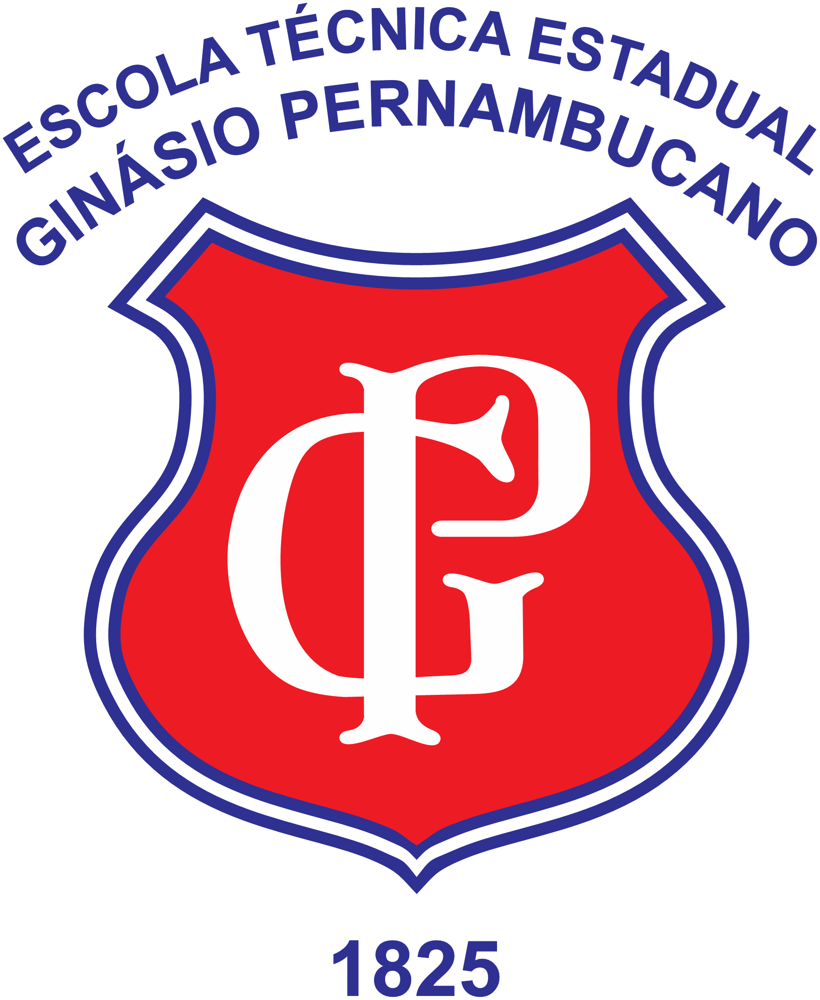

QUEM NÓS SOMOS
A Escola Técnica Estadual Ginásio Pernambucano é uma das instituições de ensino mais tradicionais do Brasil, fundada em 1º de setembro de 1825. Inicialmente chamada de Liceu Provincial de Pernambuco, a escola foi criada com o objetivo de oferecer uma educação de excelência à população pernambucana. Sua importância foi reconhecida nacionalmente, recebendo, em 1859, a visita do Imperador Dom Pedro II, que destacou o papel fundamental da escola na formação de grandes nomes do Brasil.
